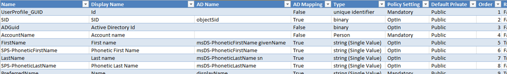

[Important] This script was done and tested with SharePoint Server 2010.
Occasionally there is a need to quickly query User Profile to export all Properties. Maybe, you can see all in Manage User Properties section inside User Profile Service Application settings:
But, it is better to have excel file with all properties and descriptions, something like that:

I’d like to share with you this Powershell file in order to generate a .csv file with these headers:
Name: Internal name of property inside User Profile database. The name will be used programmatically for the property by the user profile service.
Display Name: is the label used when the property is shown.
AD Name: Name of property mapping inside Active Directory.
AD Mapping: boolean indicating if current property is synchronized between AD and SharePoint.
Type: property type
Policy Setting: Required, Optional or Disabled in SharePoint User Profile.
Default Private: Everyone = Public -> All people can see this property inside SharePoint Profiles. Private = Only me -> Only can be for ourselves.
Order: Display order.
Replicable: Select the Replicate check box if you want the property to display in the user info list for all sites. If true then this property will be copied to all site collections.
Allow User Edit: whether users can change the values for this property in their user profile
Allow Admin Edit: whether admin can change the values for this property in their user profile
Show in Profile Info: Show in the profile properties section of the user’s profile page
Show in Profile Edit: Show on the Edit Details page
Indexed: Indexed properties are crawled by the search engine and become part of the People search scope schema
Imported from AD: If true, this property will be automatically filled by AD values.
Exported to AD: If true, this property will be automatically updated from SharePoint to AD. Requires extra configuration. By default it is False.
"Name `t Display Name `t AD Name `t AD Mapping `t Type `t Policy Setting `t Default Private `t Order `t Replicable `t Allow User Edit `t Allow Admin Edit `t Show in Profile Info `t Show in Profile Edit `t Indexed `t Imported from AD `t Exported to AD" | out-file $outputCSV;
# Temp array for Store Mapping Properties $propertyMappings = @(); $propertyMappingsList = New-Object System.Collections.ArrayList($null)
# Get all Stored Property Mappings for a given AD Connection in the ADConnection parameter $site = Get-SPSite -Limit 1; #Get Site for Service context $context = Get-SPServiceContext $site; $upConfigManager = New-Object Microsoft.Office.Server.UserProfiles.UserProfileConfigManager($context); $connectionManager = $upConfigManager.ConnectionManager; $connection = $connectionManager[$AdConnection]; $pmc = $connection.PropertyMapping; $emun = $pmc.GetEnumerator(); while ($emun.MoveNext()) { $pm = $emun.Current;
# Now we can get all User Profile Properties $profileManager = New-Object Microsoft.Office.Server.UserProfiles.UserProfileManager($context); $profiles = $profileManager.GetEnumerator(); #while ($profiles.MoveNext()) #{ $profiles.MoveNext() >> null; #Only iterate thru one user profile $userProfile = $profiles.Current;